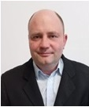

Vladimir Voronov

Personal Information
- Address: Stahlgruberring 28, 81829 München, Germany
- Mobile: +49 (0) 160 - 2465539
- Email: voronov.voldymyr@gmail.com
- Date of birth: 07.06.1981, Kramatorsk, Ukraine
- Marital status: Divorced, one child
Professional Experience
- Since 04/2025 – Professional Coaching and Consulting, IPB München
- 03/2022 – 03/2025 – Integration courses / German language up to B2 level
- 04/2016 – 12/2022 – IT System Administrator, KP Mist, Kramatorsk, Ukraine
- 03/2012 – 11/2013 – Sales Manager, Barnvinok, Kramatorsk, Ukraine
- 12/2009 – 02/2012 – Sales Manager, KZTS, Kramatorsk, Ukraine
- 05/2001 – 05/2009 – IT System Administrator, developer, consultant, Kramatorsk, Ukraine
Education
- Master's in Management, DTM MNTU, Kyiv, Ukraine (2006)
- Master's in IT, DGMA, Kramatorsk, Ukraine (2003)
- Bachelor's in Management, MNTU, Ukraine (2005)
- Bachelor's in Computer Science, DGMA, Ukraine (2002)
- Certified: Deutsch B2 (BFZ München, 2024), Deutsch B1 (BFZ München, 2023)
Skills
- Microsoft Office 2016 (good)
- Photoshop (basic)
- Languages: German (B2), English (basic), Russian (fluent), Ukrainian (fluent)
- Driver's license: B
Certificates
- Foundational C# with Microsoft (freeCodeCamp, 2025)
- Responsive Web Design (freeCodeCamp, 2025)
- JavaScript Algorithms and Data Structures (freeCodeCamp, 2025)
- Front End Development Libraries (freeCodeCamp, 2025)
- Data Visualization (freeCodeCamp, 2025)
- Scientific Computing with Python(freeCodeCamp, 2025)
- Deutsch Konversation Niveau C1 (München, 2025)
- Deutsch-Test für den Beruf B2 (telc, 2024)
Diplomas
- Bachelor's in Computer Science (DGMA, 2002)
- Specialist in Information Technology (DGMA, 2003)
- Bachelor's in Management (MNTU, 2005)
- Master's in Management of Organizations (MNTU, 2006)
- Master's in IT (DGMA, 2003)
Hobbies
- Tennis, walking, football, computer games
Vladimir Voronov
Persönliche Daten
- Adresse: Stahlgruberring 28, 81829 München
- Mobil: +49 (0) 160 - 2465539
- Email: voronov.voldymyr@gmail.com
- Geburtsdatum/-ort: 07.06.1981, Kramatorsk, UA
- Familienstand: Geschieden, ein Kind
Berufserfahrungen
- Seit 04/2025 – Coaching und Beratung, IPB München
- 03/2022 – 03/2025 – Integrationskurse / Deutsch bis Niveau B2
- 04/2016 – 12/2022 – IT Systemadministrator, KP Mist, Kramatorsk
- 03/2012 – 11/2013 – Vertriebsleiter, Barvinok, Kramatorsk
- 12/2009 – 02/2012 – Vertriebsleiter, KZTS, Kramatorsk
- 05/2001 – 05/2009 – IT Systemadministrator, developer, berator, Kramatorsk
Ausbildung
- Master Management, DTM MNTU, Kiew (2006)
- Master IT, DGMA, Kramatorsk (2003)
- Bachelor Management, MNTU (2005)
- Bachelor Informatik, DGMA (2002)
- Deutsch B2 Zertifikat (BFZ München, 2024), Deutsch B1 Zertifikat (BFZ München, 2023)
Kenntnisse
- Microsoft Office 2016 (gut)
- Photoshop (Grundkenntnisse)
- Sprachen: Deutsch (B2), Englisch (Grundkenntnisse), Russisch (fließend), Ukrainisch (fließend)
- Führerschein: Klasse B
Zertifikate
- Foundational C# with Microsoft (freeCodeCamp, 2025)
- Responsive Web Design (freeCodeCamp, 2025)
- JavaScript Algorithmen und Datenstrukturen (freeCodeCamp, 2025)
- Front End Development Libraries (freeCodeCamp, 2025)
- Data Visualization (freeCodeCamp, 2025)
- Scientific Computing with Python(freeCodeCamp, 2025)
- Deutsch Konversation Niveau C1 (München, 2025)
- Deutsch-Test für den Beruf B2 (telc, 2024)
Diplome
- Bachelor Informatik (DGMA, 2002)
- Fachrichtung Informationstechnologie (DGMA, 2003)
- Bachelor Management (MNTU, 2005)
- Master Management von Organisationen (MNTU, 2006)
- Master IT (DGMA, 2003)
Hobbys
- Tennis, Spaziergänge, Fußball, Computerspiele
Владимир Воронов
Личные данные
- Адрес: Stahlgruberring 28, 81829 Мюнхен, Германия
- Мобильный: +49 (0) 160 - 2465539
- Email: voronov.voldymyr@gmail.com
- Дата рождения: 07.06.1981, Краматорск, Украина
- Семейное положение: разведен, один ребенок
Опыт работы
- С 04/2025 — Профессиональный коучинг и консалтинг, IPB Мюнхен
- 03/2022 – 03/2025 — Интеграционные курсы / немецкий до B2
- 04/2016 – 12/2022 — Системный администратор, КП Мост, Краматорск
- 03/2012 – 11/2013 — Менеджер по продажам, Барвинок, Краматорск
- 12/2009 – 02/2012 — Менеджер по продажам, KZTS, Краматорск
- 05/2001 – 05/2009 — Системный администратор, разработчик, консультант, Краматорск
Образование
- Магистр менеджмента, DTM MNTU, Киев (2006)
- Магистр IT, DGMA, Краматорск (2003)
- Бакалавр менеджмента, MNTU (2005)
- Бакалавр информатики, DGMA (2002)
- Сертификаты: Deutsch B2 (BFZ Мюнхен, 2024), Deutsch B1 (BFZ Мюнхен, 2023)
Навыки
- Microsoft Office 2016 (хорошо)
- Photoshop (базовые знания)
- Языки: немецкий (B2), английский (базовый), русский (свободно), украинский (свободно)
- Водительские права: категория B
Сертификаты
- Foundational C# with Microsoft (freeCodeCamp, 2025)
- Responsive Web Design (freeCodeCamp, 2025)
- JavaScript Algorithms and Data Structures (freeCodeCamp, 2025)
- Front End Development Libraries (freeCodeCamp, 2025)
- Data Visualization (freeCodeCamp, 2025)
- Scientific Computing with Python(freeCodeCamp, 2025)
- Deutsch Konversation Niveau C1 (Мюнхен, 2025)
- Deutsch-Test für den Beruf B2 (telc, 2024)
Дипломы
- Бакалавр информатики (DGMA, 2002)
- Специалист по информационным технологиям (DGMA, 2003)
- Бакалавр менеджмента (MNTU, 2005)
- Магистр менеджмента организаций (MNTU, 2006)
- Магистр IT (DGMA, 2003)
Увлечения
- Теннис, прогулки, футбол, компьютерные игры
Володимир Воронов
Особисті дані
- Адреса: Stahlgruberring 28, 81829 Мюнхен, Німеччина
- Мобільний: +49 (0) 160 - 2465539
- Email: voronov.voldymyr@gmail.com
- Дата народження: 07.06.1981, Краматорськ, Україна
- Сімейний стан: розлучений, одна дитина
Досвід роботи
- З 04/2025 — Професійний коучинг та консалтинг, IPB Мюнхен
- 03/2022 – 03/2025 — Інтеграційні курси / німецька до B2
- 04/2016 – 12/2022 — Системний адміністратор, KP Mist, Краматорськ
- 03/2012 – 11/2013 — Менеджер з продажу, Barvinok, Краматорськ
- 12/2009 – 02/2012 — Менеджер з продажу, KZTS, Краматорськ
- 05/2001 – 05/2009 — Системний адміністратор, розробник, консультант, Краматорськ
Освіта
- Магістр менеджменту, DTM MNTU, Київ (2006)
- Магістр IT, DGMA, Краматорськ (2003)
- Бакалавр менеджменту, MNTU (2005)
- Бакалавр інформатики, DGMA (2002)
- Сертифікати: Deutsch B2 (BFZ Мюнхен, 2024), Deutsch B1 (BFZ Мюнхен, 2023)
Навички
- Microsoft Office 2016 (добре)
- Photoshop (базові знання)
- Мови: німецька (B2), англійська (базова), російська (вільно), українська (вільно)
- Водійське посвідчення: категорія B
Сертифікати
- Foundational C# with Microsoft (freeCodeCamp, 2025)
- Responsive Web Design (freeCodeCamp, 2025)
- JavaScript Algorithms and Data Structures (freeCodeCamp, 2025)
- Front End Development Libraries (freeCodeCamp, 2025)
- Data Visualization (freeCodeCamp, 2025)
- Scientific Computing with Python(freeCodeCamp, 2025)
- Deutsch Konversation Niveau C1 (Мюнхен, 2025)
- Deutsch-Test für den Beruf B2 (telc, 2024)
Дипломи
- Бакалавр інформатики (DGMA, 2002)
- Спеціаліст з інформаційних технологій (DGMA, 2003)
- Бакалавр менеджменту (MNTU, 2005)
- Магістр менеджменту організацій (MNTU, 2006)
- Магістр IT (DGMA, 2003)
Захоплення
- Теніс, прогулянки, футбол, комп’ютерні ігри